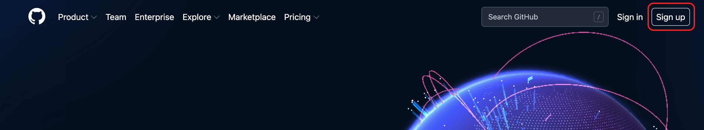
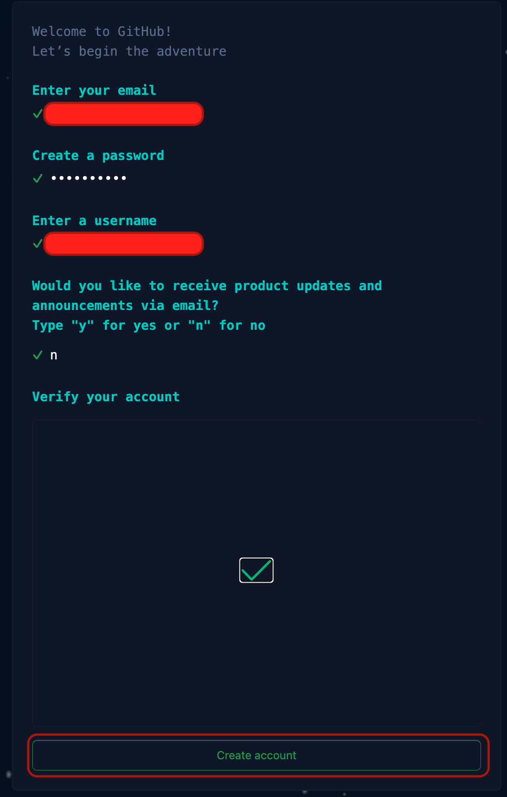
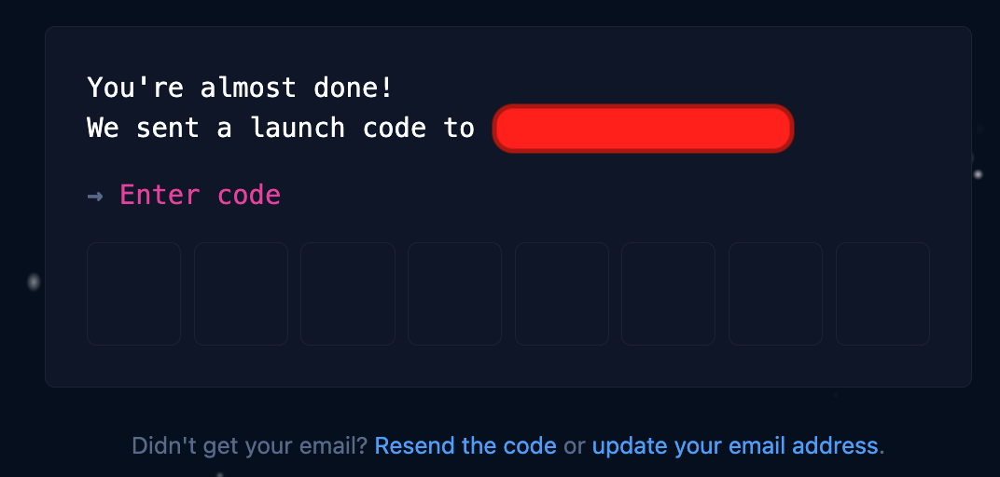
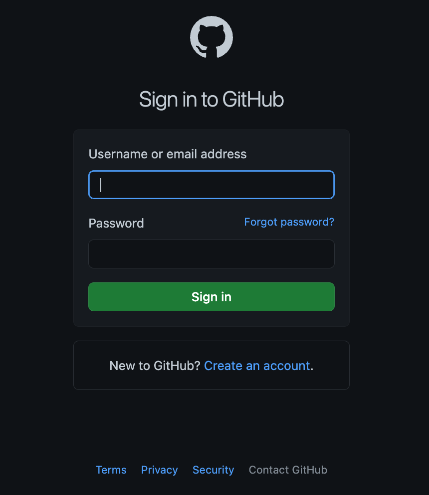
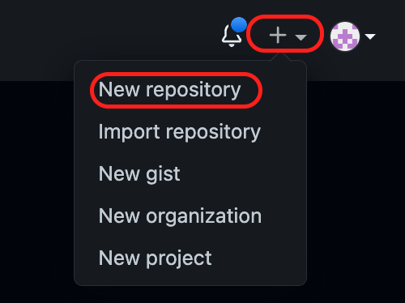
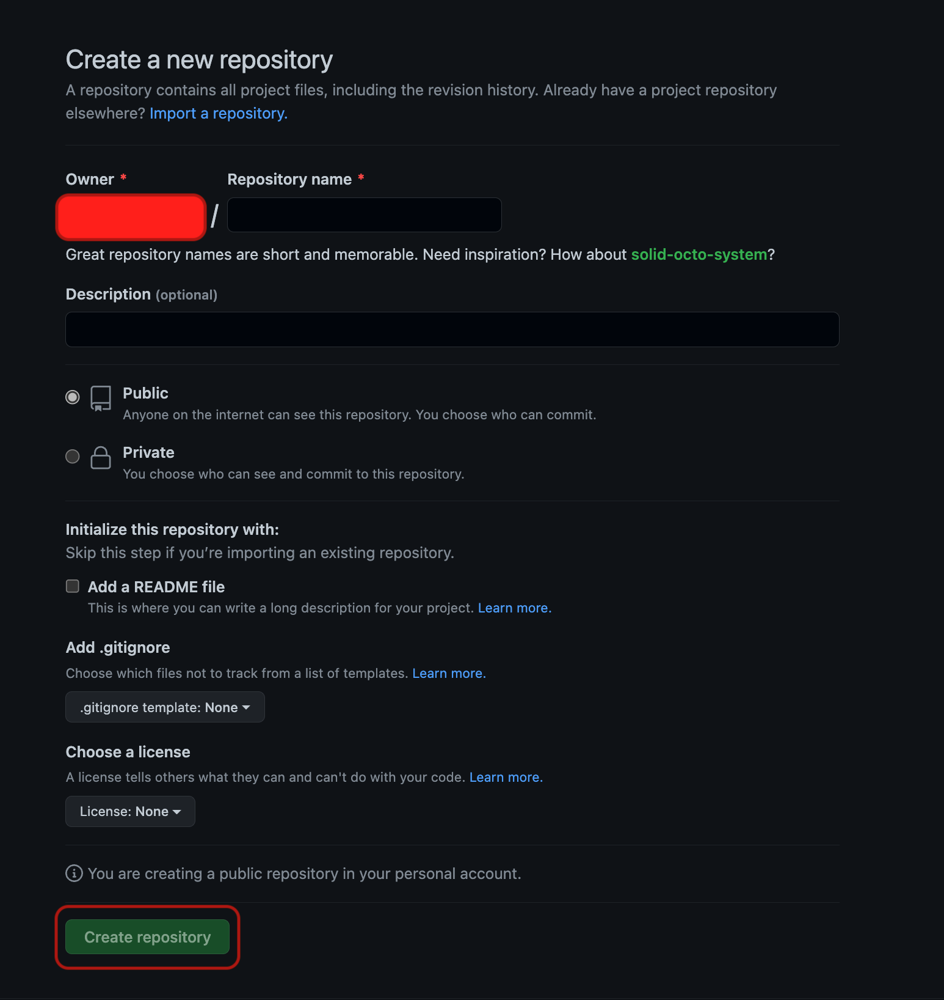
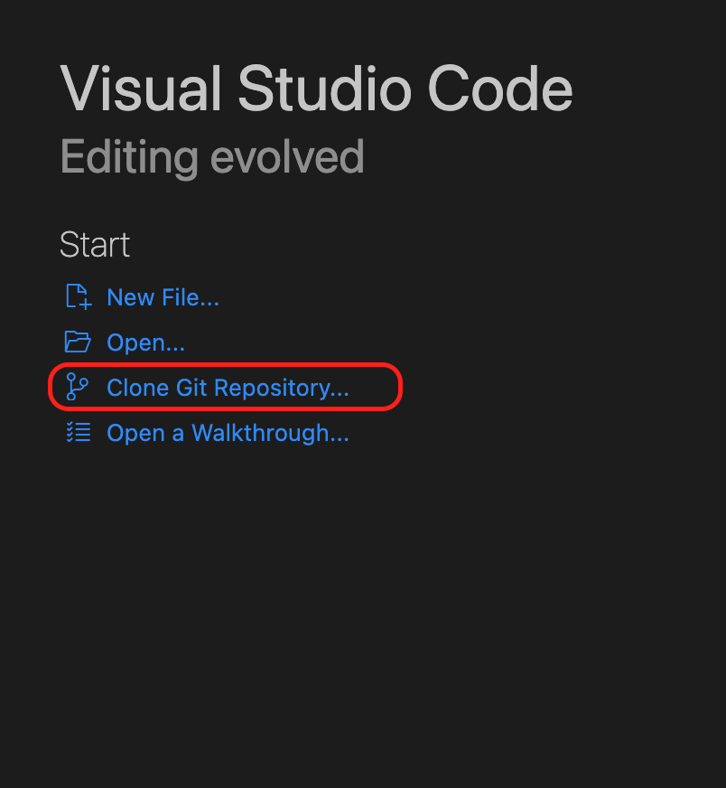
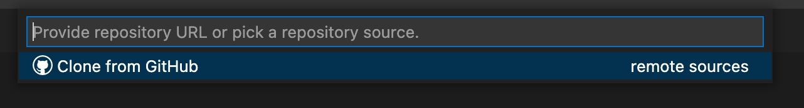
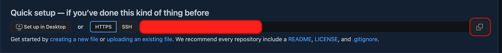
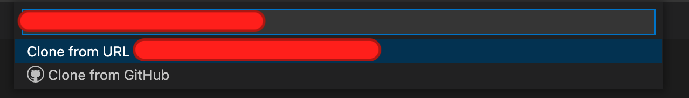

Создание репозитория на GitHub.
Регистрация на GitHub
Если у вас есть аккаунт на Github, то можете перейти к пункту - Вход на GitHub.
Для регистрации нужно пройти на сайт GitHub и нажать на кнопку Sing up в правом верхнем углу.  Далее помощник по регистрации у вас спросит данные для регистрации, такие email, пароль, имя пользователя, подписку на новости, подтверждение аккаунта и в конце нажать на кнопку Create Account.  Далее вы перейдете на страницу, где нужно указать код, который отправлен на указанный email.  После ввода кода, загрузиться страница с опросником по персонализации аккаунта. Его можно пропустить нажав внизу экрана Skip personalization. После красивой заставки, попадаем в свой аккаунт GitHub и далее можно переходить к пункту - Создание репозитория.
Вход на GitHub
Если вы перешли к этому пункту, значит у вас уже есть учетная запись на Github.
Для входа проходим на сайт GitHub и нажимаем на кнопку
Sign in в правом верхнем углу.
На следующей странице вводи логин или почтовый адрес, указанный при регистрации, пароль и нажимаем на кнопку
Sing in.

После входа, попадаем в свой аккаунт и далее можно переходить к пункту - Создание репозитория.
Создание репозитория
После создания или входа в аккаунт GitHub попадаем на личную страницу, на которой нужно нажать в правом верхнем углу + и выбрать New repository.  Попадаем на страницу создания нового репозитория. Поля доступные для заполнения или выбора:
- Repository name - название репозитория, единственное обязательное поле.
- Description - описание проекта в репозитории.
- Public - Private - выбор, приватности репозитория.
- add a README file - создание README файла, в котором можно сделать описание проекта(поддерживает язык разметки Markdown).
- Add .gitignore - добавить файл .gitignore c выбранными шаблонами.
- Choose license - выбрать лицензию проекта.
После ввода имени репозитория и осуществления остальных настроек, нажимаем внизу страницы на кнопку Create repository  На этом создание репозитория окончено и можно переходить к клонированию репозитория в локальную директорию компьютера.
Клонирование репозитория
Для клонирования репозитория я использую сразу встроенный терминал в Visual Studio code.
Инструкцию по установке можно найти тут.
Запускаем VSCode и нажимаем Clone Git Repository...

У вас откроется палитра команд с запросом вставить ссылку на репозиторий для клонирования.

Переходим на страницу нашего репозитория и нажимаем на кнопку копировать.

Скопированную ссылку вставляем в палитру команд и нажимаем Enter

Далее в появившемся окне выбрать директорию, где будут храниться файлы и подтвердить копирование.
На этом клонирование репозитория закончено.
В данной статье мы разобрались, как создать аккаунт на Github, войти в него, создать репозиторий, и клонировать репозиторий в локальное хранилище компьютера.